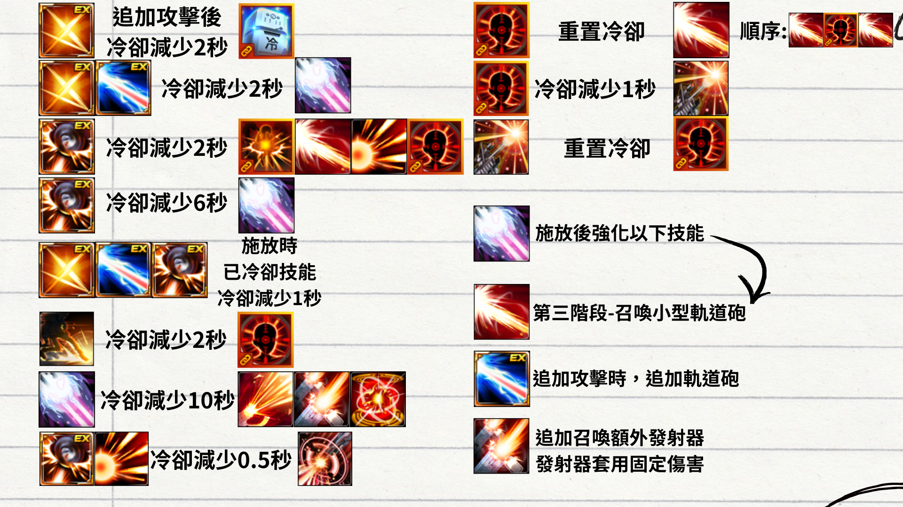
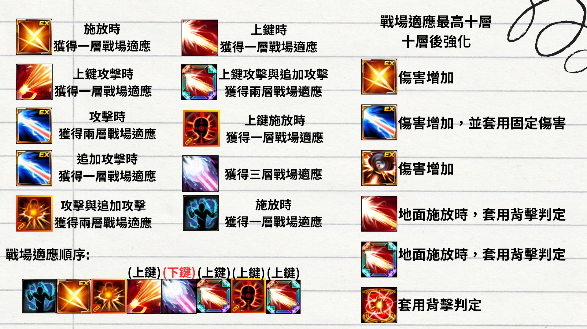

緹娜
機器人發展迅速，迅速到忘記這台中古機了

角色介紹
大招強化小招，小招減少大招CD，機動性強
技能介紹
注意事項
技能倍率皆以角色等級最高所等級(不包含裝備等額外等級)
技能旁覺醒核心為建議裝備之核心(技能說明與倍率以覺醒核心為主)
因為是由韓文翻譯為主，因此內容與台服不同請多包涵(建議以圖標為主記憶)

EX:爆破擊殺
必判:空中、背擊
冷卻:6.00秒
無敵
突進時，可使用【上、下】鍵調整突進方向
施放追加攻擊時，額外獲得1層【Buff:過熱】
施放追加攻擊時，恢復7%HP、10%MP
施放追加攻擊時，【想獨處】冷卻減少2秒
施放技能時，獲得1層【Buff:機率變動彈】
技能核心
進階-物理爆擊傷害+25%
專家-浮空爆擊傷害+25%
大師-背擊爆擊傷害+25%
【C4附著】物理攻擊力830%
【C4爆炸】物理攻擊力8,310%
【霰彈射擊】物理攻擊力9,560%
【霰彈射擊-確認擊殺】物理攻擊力9,560%%

EX:熱融光柱
必判:空中、背擊、浮空
冷卻:12.10秒
減傷80%
命中時目標時，暴擊傷害抵抗降低30%，持續10秒
按【上】鍵施放時，朝對空方向攻擊
額外獲得3層【Buff:過熱】
每次施放技能時，獲得2層【Buff:機率變動彈】
技能核心
進階-物理爆擊傷害+25%
專家-浮空爆擊傷害+45%
大師-物理傷害+30%
【放大雷射】物理攻擊力30,323(固定傷害)%
【強化雷射(額外攻擊)】物理攻擊力9,570(固定傷害)
【最終爆炸】物理攻擊力10,267%（固定傷害）

EX:火力全開
必判:空中、背擊、浮空
冷卻:10.70秒
減傷50%
無敵
額外獲得3層【Buff:過熱】
施放技能時，【快速射擊】、【熱能爆發】、【詭計射擊】、【交叉火力】、【幻影狙擊】的冷卻減少2秒
施放技能時，【必殺技:致命裝置】冷卻額外減少4秒
施放技能時，獲得【Buff:火焰之舞】
【Buff:火焰之舞】
立即回復5%HP、MP、超能爆發
物理爆擊傷害5%
最多三層
技能核心
進階-物理爆擊傷害10%
專家-物理爆擊傷害15%
大師-物理傷害20%
【目標消除】物理攻擊力10,981%
【啪俠】物理攻擊力12,812%
【寶貝再見】物理攻擊力18,302%(固定傷害)

特殊技:俯衝
冷卻:5.00秒
無敵
可使用【上、下】鍵調整落地位置
空中施放時，可移動更遠的距離
施放技能時，恢復超能力5%，並獲得【Buff:俯衝】
【Buff:俯衝】
總物理攻擊力+5%
每個技能等級額外+0.4%

必殺技:和平締造者
必判:空中
冷卻:30.60秒
減傷80%
無敵
按【上】鍵施放時，朝對空方向攻擊
技能核心
進階-物理暴擊傷害+10%
專家-浮空暴擊傷害+15%
大師-超能爆發時傷害+15%
【機槍亂射】超能盔甲等級Lv.2、物理攻擊力33,048%
【機槍亂射-對空】超能盔甲等級Lv.2、物理攻擊力33,048%
【老兵部隊衝擊】超能盔甲等級Lv.4、物理攻擊力18,216%

快速射擊
必判:空中、背擊、浮空
冷卻:6.00秒
無敵
技能核心
進階-
可透過追加輸入發動連攜攻擊
再次輸入技能鍵，可再施放1次
按【前】鍵施放時，會朝前方發動攻擊
專家-
以有效率的動作準備下一次攻擊
10秒內施放的【精準射擊-集中射擊】傷害增加
目標HP30%以上時，傷害增加50%
大師-
每次使用包含追加攻擊的技能時，獲得【Buff:機率變動彈】
【移動射擊】物理攻擊力6,703%（固定傷害）
【虛數空間射擊】物理攻擊力4,062%
【支援轟炸（每段）（修練）】物理攻擊力790%


熱能爆發
必判:空中、背擊
冷卻:7.30秒
施放技能時，不消耗【Buff:過熱】層數，並必定以最大傷害狀態發射
對HP30%以下的敵人傷害+30%
施放技能後，可透過追加輸入，以相同角度再次發射【熱能爆發】
【命中延伸-多重射擊】物理攻擊力13,133%
【命中延伸-多重射擊（對空射擊）】物理攻擊力13,133%

想獨處
冷卻:7.00秒
無敵
施放時套用緊急迴避判定
施放時，回復20%HP、MP與10%超能爆發
技能核心
進階-物理爆擊傷害20%
專家-浮空爆擊傷害30%
大師-物理爆擊傷害40%
【冰箱爆炸】物理攻擊力5,398%
【寒氣流（每段）（修練）】物理攻擊力1,230%
【寒氣爆炸（修練）】物理攻擊力1,537%

必殺技:戰場
必判:空中、背擊、浮空
冷卻:35.70秒
減傷80%
消耗5層【Buff:過熱】時，增加火箭的命中次數
目標HP60%以下時，傷害增加35%
技能核心
進階-物理爆擊傷害10%
專家-物理爆擊傷害15%
大師-物理傷害20%
【火箭】超能盔甲等級Lv.3、物理攻擊力22,459%
【火箭（過熱時）（進階）】超能盔甲等級Lv.3、物理攻擊力40,118%
【火箭（追加召喚）】超能盔甲等級Lv.3、物理攻擊力26,739%（固定傷害）


輔助技:冷靜一下
冷卻:15.00秒
減傷80%
獲得4層【Buff:過熱】
【弧形冷凍彈（1枚手榴彈）】物理攻擊力6,739%
【生成冰面（1枚手榴彈）】物理攻擊力3,002%

詭計射擊
必判:空中、浮空
冷卻:6秒
可再次輸入技能鍵，在5秒內施放追加攻擊
技能核心
進階-物理爆擊傷害10%
專家-
浮空時暴擊率+50%
浮空時防禦穿透率+30%
大師-
浮空傷害+15%
【詭計射擊】物理攻擊力8,778%（固定傷害）
【詭計射擊-追加攻擊】物理攻擊力8,778%（固定傷害）

交叉火力
必判:空中、背擊、浮空
冷卻:11.20秒
無敵
施放【無差別亂射】時無敵
【下】鍵時，會發動【突擊步槍射擊支援】
施放技能時，獲得【Buff:槍型】
【Buff:槍型】
浮空爆擊傷害15%
造成傷害23%
技能核心
進階-物理爆擊傷害15%
專家-浮空爆擊傷害20%
大師-背擊爆擊傷害20%
【手槍連射】物理攻擊力3,542%
【霰彈射擊】物理攻擊力8,973%
【步槍射擊】物理攻擊力11,805%
【雙霰彈終結】物理攻擊力12,985%(固定傷害)
【突擊步槍射擊支援（每段）】物理攻擊力3,355%

幻影狙擊
必判:空中、背擊、浮空
冷卻:12.00秒
減傷80%
按【上】鍵施放時，朝對空方向攻擊
每次施放技能時，獲得【Buff:機率變動彈】
技能核心
進階-物理爆擊傷害20%
專家-背擊爆擊傷害40%
大師-浮空傷害10%
【幻影狙擊】物理攻擊力15,104%(固定傷害)
【序列追蹤砲擊】物理攻擊力9,522%
【序列第二次爆炸（修練）】物理攻擊力11,624%


必殺技:終末啟動
必判:背擊、浮空
冷卻:56.60秒
減傷80%
目標HP25%以下時，【衛星瞄準】傷害+25%
消耗的【Buff:過熱】層數越多，【衛星雷射】的傷害與攻擊範圍越大
【衛星瞄準】超能盔甲等級Lv.3、物理攻擊力15,609%
【衛星雷射（第1階段）】超能盔甲等級Lv.3、物理攻擊力23,398%
【衛星雷射（第2階段）】超能盔甲等級Lv.3、物理攻擊力25,742%
【衛星雷射（第3階段）】超能盔甲等級Lv.3、物理攻擊力28,083%

必殺技:致命裝置
必判:空中、背擊、浮空
冷卻:120.00秒
無敵
施放時除【必殺技:致命裝置】外所有技能冷卻減少10秒
命中目標HP50%以下的敵人時，傷害增加30%
施放技能時，獲得【Buff:爆裂變動彈】、【Buff:過熱】最大層數
按【下】鍵施放時，改為朝前方召喚【毀滅者】
【毀滅者】的所有攻擊傷害減少50%
施放技能時，獲得【Buff:遠端瞄準輔助】
【Buff:遠端瞄準輔助】持續期間：
施放【熱能爆發-第3階段】時，追加召喚小型軌道砲
施放【EX:熱融光柱-線圈過熱】時，追加發射衝擊軌道砲
施放【必殺技:戰場】時，追加召喚多管火箭發射器
追加召喚武器的所有攻擊套用固定傷害
技能核心
進階-物理爆擊傷害10%
專家-物理爆擊傷害15%
大師-物理傷害20%
【任務砲發射】超能盔甲等級Lv.4、物理攻擊力20,103%
【火箭打擊】超能盔甲等級Lv.4、物理攻擊力28,138%
【高功率多重雷射】超能盔甲等級Lv.4、物理攻擊力60,293%
【近距離集中砲彈射擊】超能盔甲等級Lv.4、物理攻擊力80,388%

合作技:老兵部隊-B:緊急投入
必判: 空中、背擊、浮空
冷卻:60.00秒
必定暴擊
【攻擊支援：沃爾夫姜】超能盔甲等級Lv.3、 物理攻擊力20,160%
【攻擊支援：J】超能盔甲等級Lv.3、 物理攻擊力20,160%

炮火之雨
必判:空中、背擊、浮空
冷卻:50.00秒
減傷80%
施放技能時，重置【幻影狙擊】的冷卻時間
每次施放【幻影狙擊】時，【炮火之雨】冷卻減少1秒
【無差別轟炸】物理攻擊力42,775%
【衛星武器啟動】物理攻擊力53,460%

毀滅打擊
必判:空中、背擊、浮空
冷卻:30.00秒
減傷50%
無敵
施放【EX:火力全開】、【詭計射擊】時，【毀滅打擊】冷卻減少0.5秒
持有3層以上【Buff:過熱】時，消耗3層將【永別】更改為【永別-熱壓縮彈】
【火箭彈射】物理攻擊力39,600%
【永別】物理攻擊力31,680%
【永別-熱壓縮彈】物理攻擊力31,680%(固定傷害)

終極技:虛數加農砲
必判: 空中、背擊、浮空
冷卻: 2.00秒
超能盔甲等級Lv.4
施放期間無法施放其他技能
每次進入副本僅可使用1次
絕對無敵
【終極增幅砲擊-發射】超能盔甲等級Lv.4、物理攻擊力60,059%
【終極增幅砲擊-風暴】超能盔甲等級Lv.4、物理攻擊力105,102%
【終極增幅砲擊-爆炸】超能盔甲等級Lv.4、物理攻擊力135,135%


接法攻略


開場先疊滿10層戰場適應
 以下簡化為主
以下簡化為主

 都需施放完整
都需施放完整
 以脫手為主，在地板+下鍵，空中+上鍵
以脫手為主，在地板+下鍵，空中+上鍵

 配合，辦法見下圖
配合，辦法見下圖

重鑄推薦
總物理攻擊力、物理爆擊傷害
浮空>空中>背擊 爆擊傷害
浮空>超爆>空中>背擊 增加傷害
攻擊速度推薦1.4以上、因此斟酌保留
技能推薦:
連身時裝洗兩級
武器洗
其餘裝備與時裝技能洗
更新紀錄
2026/07/18：兩年沒更新了 涼透
2026/10/07:技能重組